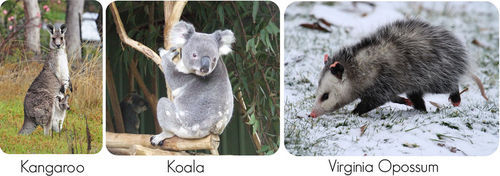
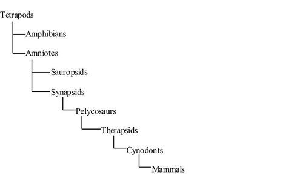

Click on the image above to view the table
You might think that these young tigers are fighting, but they’re really playing. Like most other young mammals, tigers like to play. Why do mammals play? Is playing just for fun, or does it serve some other purpose as well?
Playing is actually an important way of learning. By playing, these tigers are learning moves that will help them become successful predators as adults. Playing is just one of many ways that mammals and other animals learn how to behave. In this chapter, you will learn more about mammals such as tigers. You will also learn more about animal behavior and other ways that animals learn.
Mammals are a class of endothermic vertebrates. They have four limbs and produce amniotic eggs. Examples of mammals include bats, whales, mice, and humans. Clearly, mammals are a very diverse group. Nonetheless, they share many traits that set them apart from other vertebrates.
Two characteristics are used to define the mammal class. They are mammary glands and body hair (or fur).
Cat Communicating a Warning. By raising its fur, this cat is “saying” that it’s big and dangerous. This might discourage a predator from attacking.
Most mammals share several other traits. The traits in the following list are typical of, but not necessarily unique to, mammals.
Many structures and functions in mammals are related to endothermy. Mammals can generate and conserve heat when it’s cold outside. They can also lose heat when they become over-heated. How do mammals control their body temperature in these ways?
Mammals generate heat mainly by keeping their metabolic rate high. The cells of mammals have many more mitochondria than the cells of other animals. The extra mitochondria generate enough energy to keep the rate of metabolism high. Mammals can also generate little bursts of heat by shivering. Shivering occurs when many muscles contract a little bit all at once. Each muscle that contracts produces a small amount of heat.
Conserving heat is also important, especially in small mammals. A small body has a relatively large surface area compared to its overall size. Because heat is lost from the surface of the body, small mammals lose a greater proportion of their body heat than large mammals. Mammals conserve body heat with their hair or fur. It traps a layer of warm air next to the skin. Most mammals can make their hair stand up from the skin, so it becomes an even better insulator (see Figure below ). Mammals also have a layer of fat under the skin to help insulate the body. This fatty layer is not found in other vertebrates.
Goosebumps. Mammals raise their hair with tiny muscles in the skin. Even humans automatically contract these muscles when they are cold. They cause “goosebumps,” as shown here.
One way mammals lose excess heat is by increasing blood flow to the skin. This warms the skin so heat can be given off to the environment. That’s why you may get flushed, or red in the face, when you exercise on a hot day. You are likely to sweat as well. Sweating also reduces body heat. Sweat wets the skin, and when it evaporates, it cools the body. Evaporation uses energy, and the energy comes from body heat. Animals with fur, such as dogs, use panting instead of sweating to lose body heat (see Figure below ). Evaporation of water from the tongue and other moist surfaces of the mouth and throat uses heat and helps cool the body.
Panting Dog. This dog is overheated. It is losing excess body heat by panting.
Maintaining a high metabolic rate takes a lot of energy. The energy must come from food. Therefore, mammals need a nutritious and plentiful diet. The diets of mammals are diverse. Except for leaf litter and wood, almost any kind of organic matter may be eaten by mammals. Some mammals are strictly herbivores or strictly carnivores. However, most mammals will eat other foods if necessary. Some mammals are omnivores. They routinely eat a variety of both plant and animal foods. Most mammals also feed on a variety of other species. The few exceptions include koalas, which feed only on eucalyptus plants, and giant pandas, which feed only on bamboo. Types of mammalian diets and examples of mammals that eat them are given in Table below . How would you classify your own diet?
Click on the image above to view the table
Different diets require different types of digestive systems. Mammals that eat a carnivorous diet generally have a relatively simple digestive system. Their food consists mainly of proteins and fats that are easily and quickly digested. Herbivorous mammals, on the other hand, tend to have a more complicated digestive system. Complex plant carbohydrates such as cellulose are more difficult to digest. Some herbivores have more than one stomach. The stomachs store and slowly digest plant foods.
Mammalian teeth are also important for digestion. The four types of teeth are specialized for different feeding functions, as shown in Figure below . Together, the four types of teeth can cut, tear, and grind food. This makes food easier and quicker to digest.
Mammalian Teeth (Human). With their different types of teeth, mammals can eat a wide range of foods.
Keeping the rate of metabolism high takes a constant and plentiful supply of oxygen. That’s because cellular respiration, which produces energy, requires oxygen. The lungs and heart of mammals are adapted to meet their oxygen needs.
The lungs of mammals are unique in having alveoli. These are tiny, sac-like structures. Each alveolus is surrounded by a network of very small blood vessels (see Figure below ). Because there are millions of alveoli in each lung, they greatly increase the surface area for gas exchange between the lungs and bloodstream. Human lungs, for example, contain about 300 million alveoli. They give the lungs a total surface area for gas exchange of up to 90 square meters (968 square feet). That’s about as much surface area as one side of a volleyball court!
Alveoli of Mammalian Lungs. Clusters of alveoli resemble tiny bunches of grapes. They are surrounded by many blood vessels for gas exchange.
Mammals breathe with the help of a diaphragm. This is the large muscle that extends across the bottom of the chest below the lungs. When the diaphragm contracts, it increases the volume of the chest. This decreases pressure on the lungs and allows air to flow in. When the diaphragm relaxes, it decreases the volume of the chest. This increases pressure on the lungs and forces air out.
The four-chambered mammalian heart can pump blood in two different directions. The right side of the heart pumps blood to the lungs to pick up oxygen. The left side of the heart pumps blood containing oxygen to the rest of the body. Because of the dual pumping action of the heart, all of the blood going to body cells is rich in oxygen.
Of all vertebrates, mammals have the biggest and most complex brain for their body size (see Figure below ). The front part of the brain, called the cerebrum , is especially large in mammals. This part of the brain controls functions such as memory and learning.
Vertebrate Brains. Vertebrate brains come in a range of sizes. Even the brains of mammals show a lot of variation in size. The area of the neocortex is greatest in humans.
The brains of all mammals have a unique layer of nerve cells covering the cerebrum. This layer is called the neocortex (the pink region of the brains in Figure above ). The neocortex plays an important role in many complex brain functions. In some mammals, such as rats, the neocortex is relatively smooth. In other mammals, especially humans, the neocortex has many folds. The folds increase the surface area of the neocortex. The larger this area is, the greater the mental abilities of an animal.
Mammals are very intelligent. Of all vertebrates, they are the animals that are most capable of learning. Mammalian offspring are fed and taken care of by their parents for a relatively long time. This gives them plenty of time to learn from their parents. By learning, they can benefit from the experiences of their elders. The ability to learn is the main reason that the large mammalian brain evolved. It’s also the primary reason for the success of mammals.
Many mammals live in social groups. Social living evolved because it is adaptive. Consider these two examples:
Mammals are noted for the many ways they can move about. Generally, their limbs are very mobile. Often, they can be rotated. Many mammals are also known for their speed. The fastest land animal is a predatory mammal. Can you guess what it is? Racing at speeds of up to 112 kilometers (70 miles) per hour, the cheetah wins hands down. In addition, the limbs of mammals let them hold their body up above the ground. That’s because the limbs are attached beneath the body, rather than at the sides as in reptiles (see Figure below ).
Limb Positions in Reptiles and Mammals. The sprawling limbs of a reptile keep it low to the ground. A mammal has a more upright stance.
Mammals may have limbs that are specialized for a particular way of moving. They may be specialized for running, jumping, climbing, flying, or swimming. Mammals with these different modes of locomotion are pictured in Figure below .
Mammalian Locomotion. Mammals have many different modes of locomotion.
The deer in the Figure above is specialized for running. Why? It has long legs and hard hooves. Can you see why the other animals in the figure are specialized for their particular habitats? Notice how arboreal , or tree-living animals, have a variety of different specializations for moving in trees. For example, they may have:
1. List five traits that are shared by all mammals, including the two traits that are used to define the mammal class.
2. Describe how mammals stay warm.
3. What is the function of sweating?
4. Identify mammals that are herbivores, carnivores, and omnivores.
5. What are alveoli? What is their function?
6. A certain mammal has very long forelimbs. What does that suggest about where the animal lives and how it moves?
7. Explain how mammalian teeth differ from the teeth of other vertebrates. How are mammalian teeth related to endothermy?
8. Compare and contrast the mammalian brain with the brains of other vertebrates. How is the brain of mammals related to their ability to learn?
Most mammals are born as live young, as opposed to hatching from eggs. Giving birth to live young has certain advantages over egg laying.
Most mammals are viviparous. Their young are born live. They are born either as relatively large, well-developed fetuses or as tiny, immature embryos. Mammals that are viviparous are called therian mammals . Only a few mammals lay eggs instead of giving birth to an infant or embryo.
Like other female vertebrates, all female mammals have ovaries. These are the organs that produce eggs (see Figure below ). Therian mammals also have two additional female reproductive structures that are not found in other vertebrates. They are the uterus and vagina.
Female Reproductive System of a Therian Mammal (Human). The female reproductive system of all therian mammals is similar to that of humans.
Therian mammals are divided into two groups: placental mammals and marsupial mammals. Each group has a somewhat different reproductive strategy.
Placental mammals are therian mammals in which a placenta develops during pregnancy. The placenta sustains the fetus while it grows inside the mother’s uterus. Placental mammals give birth to relatively large and mature infants. Most mammals are placental mammals.
The placenta is a spongy structure. It consists of membranes and blood vessels from both mother and embryo (see Figure below ). The placenta passes oxygen, nutrients, and other useful substances from the mother to the fetus. It also passes carbon dioxide and other wastes from the fetus to the mother. The placenta lets blood from the fetus and mother exchange substances without actually mixing. Thus, it protects the fetus from being attacked by the mother’s immune system as a “foreign parasite.”
Placenta of a Placental Mammal (Human). The placenta allows the exchange of gases, nutrients, and other substances between the fetus and mother.
The placenta permits a long period of fetal growth in the uterus. As a result, the fetus can become large and mature before birth. This increases its chances of surviving.
On the other hand, supporting a growing fetus is very draining and risky for the mother. The mother has to eat more food to nourish the fetus. She also becomes heavier and less mobile as the fetus gets larger. As a result, she may be less able to escape from predators. Because the fetus is inside her, she can’t abandon it to save her own life if she is pursued or if food is scarce. Giving birth to a large infant is also risky. It may even result in the mother’s death.
Marsupials have a different way of reproducing that reduces the mother’s risks. A marsupial is a therian mammal in which the embryo is born at an early, immature stage. The embryo completes its development outside the mother’s body in a pouch on her belly. Only a minority of therian mammals are marsupials. They live mainly in Australia. Examples of marsupials are pictured in Figure below .

Marsupials. Marsupials include the kangaroo, koala, and opossum.
The marsupial embryo is nourished inside the uterus with food from a yolk sac instead of through a placenta. The yolk sac stores enough food for the short period of time the embryo remains in the uterus. After the embryo is born, it moves into the mother’s pouch, where it clings to a nipple. It remains inside the pouch for several months while it continues to grow and develop. Even after the offspring is big enough to leave the pouch, it may often return to the pouch for warmth and nourishment ( Figure below . Eventually, the offspring is mature enough to remain outside the pouch on its own.
The marsupial embryo finishes development in the mother's pouch. Here, a joey is shown in the mother's pouch.
In marsupials, the short period of development within the mother’s uterus reduces the risk of her immune system attacking the embryo. In addition, the marsupial mother doesn’t have to eat extra food or carry a large fetus inside her. The risks of giving birth to a large fetus are also avoided. Another pro is that the mother can expel the embryo from her pouch if she is pursued by a predator or if food is scarce. On the other hand, a newborn marsupial is tiny and fragile. Therefore, it may be less likely to survive than a newborn placental mammal.
Most people think of Opossums as scary creatures. Is this because they look kind of funny, walk kind of funny, have beady eyes and sharp teeth, and can emit a very foul odor? Maybe. But what is so different about opossums is that they are the only marsupial in North America.
But opossums can be beneficial to humans. They use their sharp teeth to crush bone – which means that they are good getting rid of unwanted rodents in your neighborhood. They have excellent immune systems and they emit that terrible oder for protection. Learn more about opossums at http://www.kqed.org/quest/blog/2009/03/31/producers-notes-for-cool-critters-opossums/ .
Click on the image above for more content
Only five living species of mammals are not therian mammals. They are called monotremes. Monotremes are mammals that reproduce by laying eggs. The only living monotreme species are the platypus and echidnas (see Figure below and Figure below ). They are found solely in Australia and New Guinea (an island not far from Australia).
Platypus. The platypus is a monotreme, a mammal that reproduces by laying eggs.
Echidna. Like the platypus, the echnida is a monotreme. The only living monotreme species inhabit Australia and New Guinea.
Female monotremes lack a uterus and vagina. Instead, they have a cloaca with one opening, like the cloacas of reptiles and birds. The opening is used to excrete wastes as well as lay eggs.
Monotreme eggs have a leathery shell, like the eggs of reptiles. The eggs are retained inside the mother’s body for at least a couple of weeks. During that time, the mother provides the eggs with nutrients. Platypus females lay their eggs in a burrow. Echidna females have a pouch in which they store their eggs. Female monotremes have mammary glands but lack nipples. Instead, they “sweat” milk from a patch on their belly.
The mother’s risks are less in monotremes than in therian mammals. The mother doesn’t need to eat more or put herself at risk by carrying and delivering a fetus or an embryo. On the other hand, externally laid eggs are more difficult to protect than an embryo in a pouch or a fetus in a uterus. Therefore, monotreme offspring may be less likely to survive than the offspring of therian mammals.
1. What are the functions of the uterus and vagina in therian mammals?
2. What is the placenta? What is its role?
3. Where does a marsupial embryo develop? How is it nourished?
4. Describe eggs and egg laying in monotremes.
5. How does lactation differ in monotremes and therian mammals?
6. Create a chart that you could use to explain to a younger student the different ways that mammals reproduce.
7. Compare and contrast the advantages and disadvantages of the three forms of reproduction in mammals.
8. Placental mammals greatly outnumber the other two groups of mammals. Infer why placental mammals have been so successful.
Monotremes are less similar to therian mammals than the two groups of therian mammals are to each other.
Which mammalian trait evolved first? What was the first mammal like? When did the earliest mammal live? Detailed answers to these questions are still in dispute. However, scientists generally agree on the major events in the evolution of mammals. These are summarized in Table below . Refer back to the table as you read about the events in this lesson. *mya = millions of years ago
| Era | Period | Epoch | Major Events | Start (mya)* |
|---|---|---|---|---|
| Cenozoic | Neogene | Holocene | Rise of human civilization; spread and dominance of modern humans | 0.01 |
| - | - | Pleistocene | Spread and then extinction of many large mammals; appearance of modern humans | 1.8 |
| - | - | Pliocene | Appearance of many existing genera of mammals, including the genus Homo | 5.3 |
| - | - | Miocene | Appearance of remaining modern mammal families; diversification of horses and mastodons; first apes | 23.0 |
| - | Paleogene | Oligocene | Rapid evolution and diversification of placental mammals | 33.9 |
| - | - | Eocene | Appearance of several modern mammal families; diversification of primitive whales | 55.8 |
| - | - | Paleocene | Appearance of the first large mammals | 65.5 |
| Mesozoic | Cretaceous | - | Emergence of monotreme, marsupial, and placental mammals; possible first appearance of four clades (superorders) of placental mammals (Afrotheria, Xenarthra, Laurasiatheria, Supraprimates) | 145.5 |
| - | Jurassic | - | Spread of mammals, which remain small in size | 199.6 |
| - | Triassic | - | Evolution of cynodonts to become smaller and more mammal-like; appearance of the first mammals | 251.0 |
| Paleozoic | Permian | - | Evolution and spread of synapsids (pelycosaurs and therapsids) | 299.0 |
| - | Carboniferous | - | Appearance of amniotes, the first fully terrestrial vertebrates | 359.0 |
Ancestors of mammals evolved close to 300 million years ago. They were amniotes called synapsids. Figure below shows how modern mammals evolved from synapsids. The stages of evolution from synapsids to mammals are described below.

Phylogeny of Mammalian Evolution. This diagram represents the evolution of mammals.
Synapsids called pelycosaurs became the most common land vertebrates during the first half of the Permian Period. A pelycosaur genus called Dimetrodon is shown in Figure below . Dimetrodon had sprawling legs and walked like a lizard. It also had a fairly small brain. However, it had started to develop some of the traits of mammals. For example, it had teeth of different types.
Pelycosaur Synapsid: Dimetrodon. Dimetrodon was a pelycosaur. It lived about 275 million years ago.
Some pelycosaurs gave rise to a group of animals called therapsids . The earliest therapsids lived about 260 million years ago. At first, the therapsids looked a lot like Dimetrodon . But after a while, they could easily be mistaken for mammals. They evolved a number of mammalian traits, such as legs positioned under the body instead of along the sides. Therapsids became the most common and diverse land vertebrates during the second half of the Permian Period.
The Permian Period ended about 250 million years ago with a mass extinction. Most therapsids went extinct. Their niches were taken over by sauropsids. These were the amniotes that evolved into dinosaurs, reptiles, and birds. Not all therapsids went extinct, however. The few that remained no longer had to compete with many other therapsids. Some of them eventually evolved into mammals.
The surviving therapsids were small animals. Some of the most successful were the cynodonts (see Figure below ). They flourished worldwide during the first half of the Triassic Period. Some of them ate insects and were nocturnal, or active at night. Being nocturnal may have helped save them from extinction. Why? A nocturnal niche was one of the few niches that dinosaurs did not take over in the Triassic Period.
Cynodonts became more mammal-like as they continued to evolve. Some of their mammalian traits may have been adaptations to their nocturnal niche. For example:
Probable Mammalian Ancestor: Cynodont. Cynodonts were mammal-like therapsids. They may have been ancestral to mammals. They were about the size of a rat.
By the end of the Triassic Period, cynodonts had become even smaller in size. They also had evolved many mammalian traits. For example, they had
Cynodonts probably gave rise to mammals about 200 million years ago. However, they are not considered to be mammals themselves. In fact, competition with early mammals may have led to their extinction. They went extinct sometime during the Jurassic or Cretaceous Period.
The earliest mammals evolved from cynodonts. But the evolution of mammals didn’t end there. Mammals continued to evolve. Monotreme mammals probably split off from other mammals first. They were followed by marsupials. Placental mammals probably evolved last.
The first monotremes may have evolved about 150 million years ago. Early monotreme fossils have been found in Australia. An example is a genus called Steropodon , shown in Figure below . It may have been the ancestor of the platypus. Early monotremes retained some of the traits of their therapsid ancestors. For example, they laid eggs and had a cloaca. These traits are still found in modern monotremes.
Probable Monotreme Ancestor: Steropodon. Like the platypus, Steropodon probably had a bill.
The first marsupials may have evolved about 130 million years ago. One of the earliest was the extinct genus Sinodelphys . A fossil of this mammal has been identified. It is a remarkable fossil find. It represents a nearly complete animal. Even tufts of hair and imprints of soft tissues were preserved. For additional information, see Highway of Life at http://www.lihatvideo.com/highway-of-life-part-2-of-2/FtJC3C6hxzU . Sinodelphys was about 15 centimeters (6 inches) long. Its limb structure suggests that it was a climbing animal. It could escape from predators by climbing into trees. It probably lived on a diet of insects and worms.
The earliest placental mammals may have evolved about 110 million years ago. The ancestor of placental mammals may be the extinct genus Eomaia . Fossils of Eomaia have been found in what is now China. It was only about 10 centimeters (4 inches) long. It was a tree climber and probably ate insects and worms. Eomaia had several traits of placental mammals. Figure below shows an Eomaia fossil.
Probable Ancestor of Placental Mammals: Eomaia. Eomaia lived over 100 million years ago.
The placental mammal descendants of Eomaia were generally more successful than marsupials and monotremes. On most continents, placental mammals became the dominant mammals, while marsupials and monotremes died out. Marsupials remained the most common and diverse mammals in Australia. The reason for their success there is not yet resolved.
The Cretaceous Period ended with another mass extinction. This occurred about 65 million years ago. All of the dinosaurs went extinct at that time. Did the extinction of the dinosaurs allow mammals to take over?
Scientists have long assumed that the extinction of the dinosaurs opened up many niches for mammals to exploit. Presumably, this led to an explosion of new species of mammals early in Cenozoic Era. Few mammalian fossils from the early Cenozoic have been found to support this theory. Even so, it was still widely accepted until recently.
In 2007, an international team of scientists compared the DNA of almost all known species of living mammals. They used the data to create a supertree of mammalian evolution. The supertree shows that placental mammals started to diversify as early as 95 million years ago.
What explains the diversification of mammals long before the dinosaurs went extinct? What else was happening at that time? One change was a drop in Earth’s temperature. This may have favored endothermic mammals over ectothermic dinosaurs. Flowering plants were also spreading at that time. They may have provided new and plentiful foods for small mammals or their insect prey.
The supertree also shows that another major diversification of mammals occurred about 50 million years ago. Again, worldwide climate change may have been one reason. This time Earth’s temperature rose. The warmer temperature led to a greater diversity of plants. This would have meant more food for mammals or their prey.
Traditional classifications of mammals are based on similarities in structure and function. Increasingly, mammals are being classified on the basis of molecular similarities.
The most widely accepted traditional classification of mammals divides living placental mammals into 17 orders. These orders are shown in Table below . This classification of mammals was widely accepted for more than 50 years. Placental mammals are still commonly placed in these orders. However, this classification is not very useful for studies of mammalian evolution. That’s because it groups together some mammals that do not seem to be closely related by descent from a recent common ancestor.
Click on the image above to view the table
The mammalian supertree classifies placental mammals phylogenetically. It groups together mammals that are closely related because they share a recent common ancestor. These groups are not necessarily the same as the traditional groups based on structure and function. The supertree classification places placental mammals in four superorders. The four superorders and some of the mammals in them are:
All four superorders appear to have become distinct from one another between 85 and 105 million years ago. The exact relationships among the superorders are still not clear. Revisions in this classification of mammals may occur as new data become available.
1. What were the synapsids? When were they most widespread?
2. Identify the therapsids. How were they related to mammals?
3. Describe cynodonts. What is their place in the evolution of mammals?
4. Outline the evolution of monotreme, marsupial, and placental mammals.
5. What is the mammalian supertree?
6. Assume that a new species of placental mammal has been discovered. Scientists have examined it closely and studied its DNA. It has wings similar to a bat that it uses for gliding. Its DNA is most similar to the DNA of rodents such as mice. How would you classify the new mammal? Explain your answer.
7. Explain why the extinction of most therapsids at the end of the Permian Period may have allowed mammals to evolve.
8. Relate the extinction of dinosaurs to the diversification of modern mammals.
9. Compare and contrast traditional and phylogenetic classifications of placental mammals. Explain which type of classification is more useful for understanding how mammals evolved.
Some mammalian traits, such as different types of teeth, evolved in ancestors of mammals. Other traits, such as placental reproduction, evolved after the first mammals appeared. Mammals also evolved many behavioral traits.
Did you ever see a dog sit on command? Have you ever watched a cat trying to catch a mouse? These are just two examples of the many behaviors of animals. Animal behavior includes all the ways that animals interact with each other and the environment. Examples of common animal behaviors are pictured in Figure below .
Examples of Animal Behavior. Can you think of other examples of animal behavior besides the three shown here?
The branch of biology that studies animal behavior is called ethology . Ethologists usually study how animals behave in their natural environment, rather than in a lab. They generally try to answer four basic questions about the behaviors they observe:
As you read about animal behavior in the rest of this lesson, think about these four questions. Try to answer the questions for different types of animal behavior.
To the extent that behaviors are controlled by genes, they may evolve through natural selection. If behaviors increase fitness, they are likely to become more common over time. If they decrease fitness, they are likely to become less common.
Some behaviors seem to be controlled solely by genes. Others appear to be due to experiences in a given environment. Whether behaviors are controlled mainly by genes or by the environment is often a matter of debate. This is called the nature-nurture debate . Nature refers to the genes an animal inherits. Nurture refers to the environment that the animal experiences. In reality, most animal behaviors are not controlled by nature or nurture. Instead, they are influenced by both nature and nurture. In dogs, for example, the tendency to behave toward other dogs in a certain way is probably controlled by genes. However, the normal behaviors can’t develop in an environment that lacks other dogs. A puppy raised in isolation from other dogs may never develop the normal behaviors. It may always fear other dogs or act aggressively toward them.
It’s easy to see how many common types of behavior evolve. That’s because they obviously increase the fitness of the animal performing them. For example, when wolves hunt together in a pack, they are more likely to catch prey (see Figure below ). Therefore, hunting with others increases a wolf’s fitness. The wolf is more likely to survive and pass its genes to the next generation by behaving this way.
Wolves Hunting Cooperatively. Wolves hunt together in packs. This is adaptive because it increases their chances of killing prey and obtaining food.
The evolution of certain other types of behavior is not as easy to explain. An example is a squirrel chattering loudly to warn other squirrels that a predator is near. This is likely to help the other squirrels avoid the predator. Therefore, it could increase their fitness. But what about the squirrel raises the alarm? This squirrel is more likely to be noticed by the predator. Therefore, the behavior may actually lower this squirrel’s fitness. How could such a behavior evolve through natural selection?
One possible answer is that helping others often means helping close relatives. Close relatives share many of the same genes that they inherited from their common ancestor. As a result, helping a close relative may actually increase the chances that copies of one’s own genes will be passed to the next generation. In this way, a behavior that puts oneself at risk could actually increase through natural selection. This form of natural selection is called kin selection.
Behaviors that are closely controlled by genes with little or no environmental influence are called innate behaviors . These are behaviors that occur naturally in all members of a species whenever they are exposed to a certain stimulus. Innate behaviors do not have to be learned or practiced. They are also called instinctive behaviors. An instinct is the ability of an animal to perform a behavior the first time it is exposed to the proper stimulus. For example, a dog will drool the first time—and every time—it is exposed to food.
Innate behaviors are rigid and predictable. All members of the species perform the behaviors in the same way. Innate behaviors usually involve basic life functions, such as finding food or caring for offspring. Several examples are shown in Figure below . If an animal were to perform such important behaviors incorrectly, it would be less likely to survive or reproduce.
Examples of Innate Behavior. These innate behaviors are necessary for survival or reproduction. Can you explain why each behavior is important?
Innate behaviors occur in all animals. However, they are less common in species with higher levels of intelligence. Humans are the most intelligent species, and they have very few innate behaviors. The only innate behaviors in humans are reflexes. A reflex is a response that always occurs when a certain stimulus is present. For example, a human infant will grasp an object, such as a finger, that is placed in its palm. The infant has no control over this reaction because it is innate. Other than reflexes such as this, human behaviors are learned–or at least influenced by experience—rather than being innate.
Learning is a change in behavior that occurs as a result of experience. Compared with innate behaviors, learned behaviors are more flexible. They can be modified to suit changing conditions. This may make them more adaptive than innate behaviors. For example, drivers may have to modify how they drive (a learned behavior) when roads are wet or icy. Otherwise, they may lose control of their vehicle.
Animals may learn behaviors in a variety of ways. Some ways are quite simple. Others are more complex. Several types of learning are described in Figure below .
Types of Learning. Five different ways that animals may learn behaviors are shown here. What have you learned in each of these ways?
Insight learning, which is based on past experience and reasoning, is a hallmark of the human animal. Humans have used insight learning to solve problems ranging from starting a fire to traveling to the moon.
Different types of behavior evolved in animals because the behaviors helped them survive or reproduce. Several different types of animal behavior are described below.
In many species, animals live together in a close-knit group with other members of their species. Such a group is referred to as a society . Animals that live in a society are known as social animals . They live and work together for the good of the group. This called cooperation. Generally, each member of the group has a specific role that it plays in the society. Cooperation allows the group to do many things that a lone animal could never do. Look at the ants in Figure below . By working together, they are able to carry a large insect back to the nest to feed other members of their society.
Cooperation in a Social Insect. These ants are cooperating in a task that a single ant would be too small to do alone.
For individuals to cooperate, they need to communicate. Animals can communicate with sounds, chemicals, or visual cues. For example, to communicate with sounds, birds sing and frogs croak. Both may be communicating that they are good mates. Ants communicate with chemicals called pheromones. For example, they use the chemicals to mark trails to food sources so other ants can find them. Male dogs use pheromones in urine to mark their territory. They are “telling” other dogs to stay out of their yard. You can see several examples of visual communication in Figure below .
Visual Communication in Animals. Many animals use visual cues to communicate.
Many animal behaviors occur in a regular cycle. Two types of cyclic behaviors are circadian rhythms and migration.
Godwit Migration Route. Godwits make this incredibly long journey twice a year. In the fall, they migrate from the Arctic to Antarctica. They make the return flight in the spring.
For thousands of years and countless generations, migratory birds have flown the same long-distance paths between their breeding and feeding grounds. Understanding the routes these birds take, called flyways, helps conservation efforts and gives scientists better knowledge of global changes, both natural and man-made. See http://www.kqed.org/quest/television/the-great-migration for additional information.

Click on the image above for more content
Aggression is behavior that is intended to cause harm or pain. It may involve physical violence against other individuals. For example, two male gorillas may fight and use their canine teeth to inflict deep wounds. Expressing aggression this way may lead to serious injury and even death. In many species, display behaviors—rather than actual physical attacks—are used to show aggression. This helps prevent injury and death. Male gorillas, for example, are more likely to put on a display of aggression than to attack another male. In fact, gorillas have a whole series of display behaviors that they use to show aggression. They beat on their chest, dash back and forth, and pound the ground with their hands.
Aggressive behavior often occurs when individuals compete for the same resources. Animals may compete for territory, water, food, or mates. There are two basic types of competition: intraspecific and interspecific.
Mating refers to the union of a male and female of the same species for reproduction. The relationship between mates varies by species. Adults may have many mates, or they may mate with just one individual. Mates may stay together only while mating. Or they may stay together for an entire breeding season or even for life. Females are likely to be more selective than males in choosing mates. In many species, males put on courtship displays to encourage females to choose them as mates. For example, to attract a mate, a male bowerbird builds an elaborate nest decorated with hundreds of small blue objects (see Figure below ). Other examples were described above and in previous lessons.
Bowerbird Decorating His Nest. A male bowerbird spends many hours collecting bits of blue glass and other small blue objects to decorate his nest. A female bowerbird inspects the nests of many males before choosing as a mate the male with the best nest.
In most species of fish, amphibians, and reptiles, parents provide no care to their offspring. In birds and mammals, on the other hand, parental care is common. Most often, the mother provides the care. However, in some species, both parents or just the father may be involved.
Parental care is generally longest and most involved in mammals. Besides feeding and protecting their offspring, parents may teach their offspring skills they will need to survive on their own. For example, meerkat adults teach their pups how to eat scorpions. They show the pups how to safely handle the poisonous insects and how to remove the stingers.
1. Define animal behavior.
2. What is the nature-nurture debate?
3. What are innate behaviors? Give an example.
4. What is the relationship between intelligence and learning?
5. Name three types of learning in animals.
6. Describe an example of courtship behavior in animals.
7. Assume you are an ethologist. Apply lesson concepts to develop a hypothesis about a particular animal behavior. As an ethologist, how would you study the behavior in order to test your hypothesis?
8. Create a bulletin board or brief video to demonstrate the role of facial expressions in human communication.
9. Infer how and why cooperative hunting in female lions evolved.
10. Compare and contrast instinct and learning.
11. Explain why communication is needed for social living.
In this lesson, you learned some of the ways that humans differ from other mammals. For example, humans have a larger and more complex brain than other mammals. That’s why they are also the most intelligent mammals. The next chapter introduces the biology of the human animal.
Opening image copyright hxdbzxy, 2010. http://www.shutterstock.com . Used under license from Shutterstock.com.
For Table above , from top to bottom,
For Table above , from top to bottom,
{kind=link}
{kind=link}
{kind=link}
{kind=link}
{kind=link}
{kind=link}
{kind=link}
{kind=link}
{kind=link}
{kind=link}
{kind=link}
{kind=link}
{kind=link}
![(Running deer) http://commons.wikimedia.org/wiki/File:Deer_running.jpg; (Kangaroo) http://www.flickr.com/photos/chrissamuel/5366854530/; (Spider monkey) http://commons.wikimedia.org/wiki/File:Klammeraffe-drawing.jpg; (Gibbon) http://en.wikipedia.org/wiki/File:Brachiating_Gibbon_%28Some_rights_reserved%29.jpg; (Tarsier) http://www.flickr.com/photos/verzo/1009489040/in/photostream/; (Bat) http://commons.wikimedia.org/wiki/File:Bat_flying_at_night.png; (Dolphin) http://commons.wikimedia.org/wiki/File:Spotteddolphin1.jpg]((Running%20deer)%20http://commons.wikimedia.org/wiki/File:Deer_running.jpg;%20(Kangaroo)%20http://www.flickr.com/photos/chrissamuel/5366854530/;%20(Spider%20monkey)%20http://commons.wikimedia.org/wiki/File:Klammeraffe-drawing.jpg;%20(Gibbon)%20http://en.wikipedia.org/wiki/File:Brachiating_Gibbon_%28Some_rights_reserved%29.jpg;%20(Tarsier)%20http://www.flickr.com/photos/verzo/1009489040/in/photostream/;%20(Bat)%20http://commons.wikimedia.org/wiki/File:Bat_flying_at_night.png;%20(Dolphin)%20http://commons.wikimedia.org/wiki/File:Spotteddolphin1.jpg){kind=link}
{kind=link}
%20http://en.wikipedia.org/wiki/File:Kangaroo_and_joey03.jpg;%20(Koala)%20http://www.flickr.com/photos/robertawb/2583129063/;%20(Opossum)%20http://www.shutterstock.com){kind=link}
{kind=link}
{kind=link}
{kind=link}
{kind=link}
{kind=link}
{kind=link}
%20http://www.flickr.com/photos/orangeacid/236234522/;%20(Bird)%20http://commons.wikimedia.org/wiki/File:Nest_bird.jpg;%20(Caterpillar)%20http://www.flickr.com/photos/54459164@N00/4626916625/;%20(Dolphin)%20http://www.shutterstock.com){kind=link}
%20http://commons.wikimedia.org/wiki/File:Young_male_chimp.png;%20(All%20other%20images)%20http://www.shutterstock.com){kind=link}
{kind=link}
{kind=link}